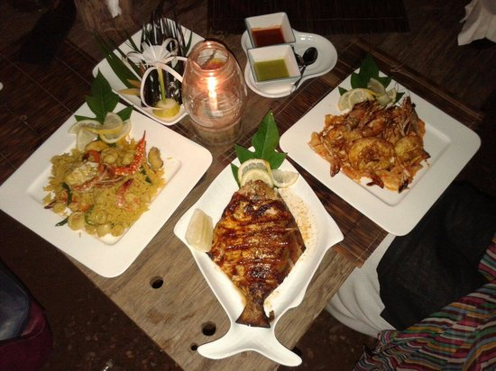
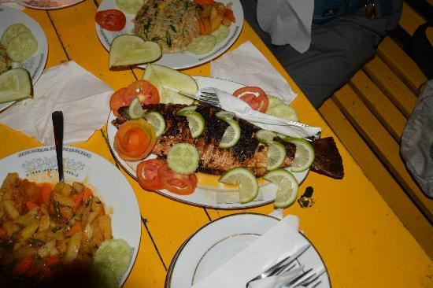
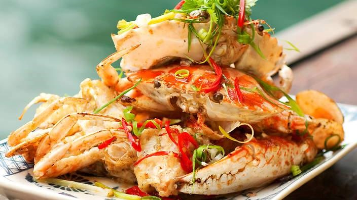
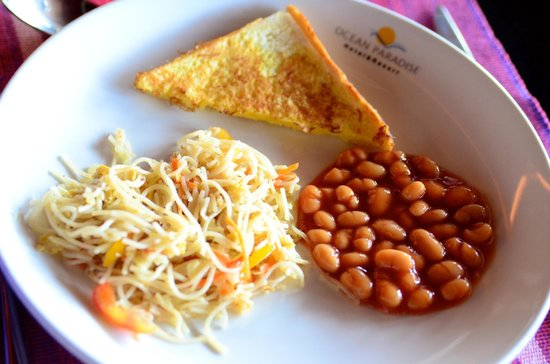
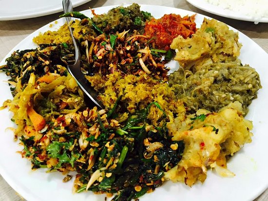

Mermaid Cafe
Description
The only sea food cafe on the beach at Cox's Bazar with music as its back drop. The cafe management is strict on
serving organic food and well known for pampering the guests. The place where full moon parties are a common scenario
with the roars of the sea playing as DJ. If you want to dine with a view of the beach, with the sound of the sea,
so close to the beach that your toes are in the sand, there is only one place to go to in Cox's Bazar - The Mermaid Café!
On the beach between Shugandha and Kolatoli Beach, opposite Uni-Resort, the Mermaid Café has great food. When you add great
food to an unbelievably great location, the Mermaid Café offers a dining experience in Cox's Bazar, second to none.
Location and Contact Information
Address: Sea inn point, Sugandha Beach | Kolatoli, Cox's Bazar 4700, Bangladesh
Location: Asia > Bangladesh > Chittagong Division > Cox's Bazar
Phone Number: +880 1841-416461
E-mail
Restaurant features
Takeout, Reservations, Outdoor Seating, Seating, Waitstaff, Accepts American Express, Accepts Mastercard, Accepts Visa, Parking Available

Jhaubon Restaurant
Description
> A perfect place to dine with your friends & family where food is an art & quality is our Obsession
> Capacity: 220 person at a time (Largest Restaurant in Cox's Bazar)
> Special rate for Corporate Order (Min 100 person)
> Discount offer for all TripAdvisor member with a checkIn/review :)
Location and Contact Information
Address: Kolatoli Road, Cox's Bazar, Bangladesh
Location: Asia > Bangladesh > Chittagong Division > Cox's Bazar
Phone Number: +880 1819-725550
Restaurant features
Seating, Waitstaff, Takeout

Sea Lamp Beach Cafe
Location and Contact Information
Address: Kalatali Beach Zone | Cox's Bazar, Cox's Bazar 4700, Bangladesh
Location: Asia > Bangladesh > Chittagong Division > Cox's Bazar
Phone Number: +880 1718-266980
Restaurant features
Reservations, Seating, Waitstaff
Cuisine
Seafood, Barbecue, Asian

Sun Dancer Cafe
Location and Contact Information
Address: Marine Drive Road | Himchori, Cox's Bazar, Bangladesh
Location: Asia > Bangladesh > Chittagong Division > Cox's Bazar
Phone Number: +880 1828-090100
Open Hours
Sunday
12:00 AM - 11:59 PM
Monday
12:00 AM - 11:59 PM
Tuesday
12:00 AM - 11:59 PM
Wednesday
12:00 AM - 11:59 PM
Thursday
12:00 AM - 11:59 PM
Friday
12:00 AM - 11:59 PM
Saturday
12:00 AM - 11:59 PM

Poushee Restaurant
Description
This restaurant is the most famous economy restaurant of Cox's bazar which around 3 km away from beach.
Location and Contact Information
<
Address: Hotel Saymon Road, Cox's Bazar, Bangladesh
Location: Asia > Bangladesh > Chittagong Division > Cox's Bazar
Phone Number: +880 341-62343
Meals
Breakfast, Lunch, Dinner, Late Night